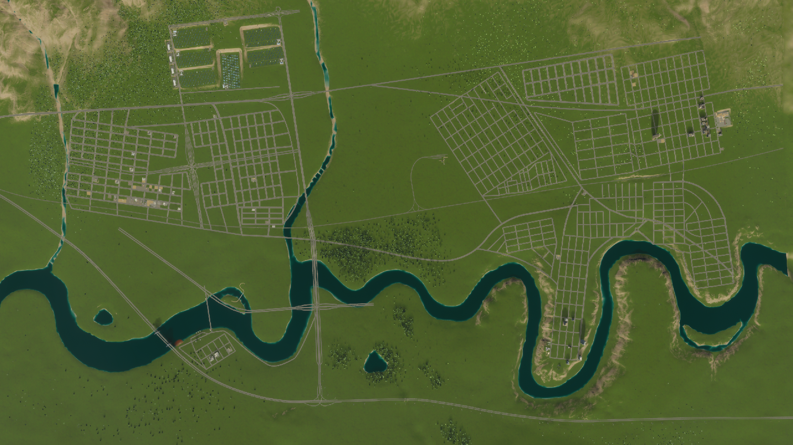

The starting layout of the city - in this one you can identify the artieriel road setup,
which uses a heighrachy of roads (highway which connects to four lane then to two lane for buildings).
Completed Design
In this image you can see the other methods of road systems which were used to reduce tarffic (with the larger buildings for scale).